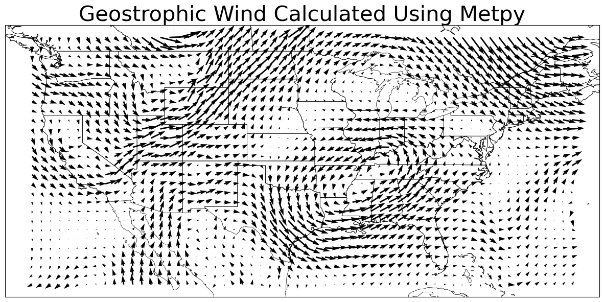
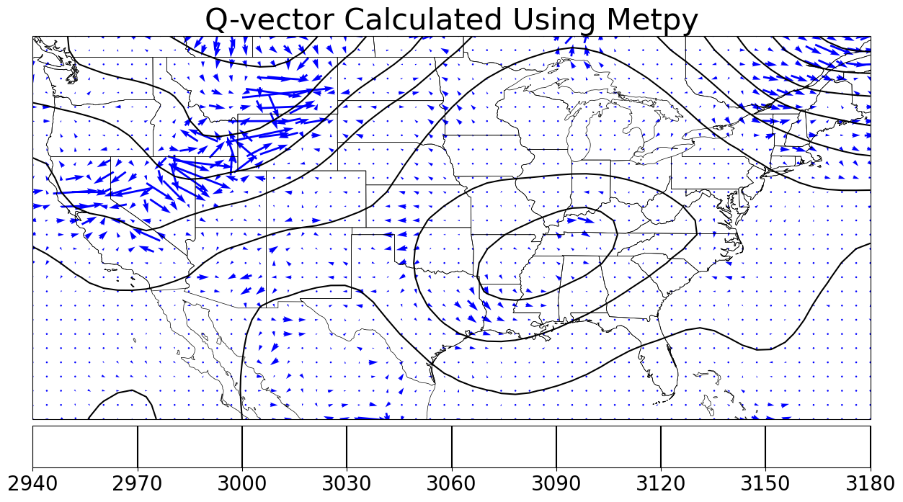

Geostrophic Wind and Other Calcuations
Demonstrate a variety of calculations in MetPy.
import metpy.calc as mpcalc
import xarray as xr
import numpy as np
from metpy.calc import geostrophic_wind
from metpy.calc import q_vector
from metpy.units import units
import matplotlib.pyplot as plt
import cartopy.crs as ccrs
import cartopy.feature as cfeature
from scipy.ndimage.filters import gaussian_filter
/tmp/ipykernel_4494/2639708157.py:10: DeprecationWarning: Please import `gaussian_filter` from the `scipy.ndimage` namespace; the `scipy.ndimage.filters` namespace is deprecated and will be removed in SciPy 2.0.0.
from scipy.ndimage.filters import gaussian_filter
## opening NetCDF file using xarray
ds = xr.open_dataset("../convective/NETCDF_FILE.nc", decode_times=True)
ds
<xarray.Dataset> Size: 2MB
Dimensions: (time: 1, lon: 71, lat: 41, lev: 23)
Coordinates:
* time (time) datetime64[ns] 8B 2019-06-08
* lon (lon) float64 568B -130.5 -129.5 -128.5 ... -62.5 -61.5 -60.5
* lat (lat) float64 328B 20.5 21.5 22.5 23.5 24.5 ... 57.5 58.5 59.5 60.5
* lev (lev) float64 184B 1e+03 975.0 950.0 925.0 ... 300.0 250.0 200.0
Data variables:
H (time, lev, lat, lon) float32 268kB ...
OMEGA (time, lev, lat, lon) float32 268kB ...
PS (time, lat, lon) float32 12kB ...
QV (time, lev, lat, lon) float32 268kB ...
SLP (time, lat, lon) float32 12kB ...
T (time, lev, lat, lon) float32 268kB ...
U (time, lev, lat, lon) float32 268kB ...
V (time, lev, lat, lon) float32 268kB ...
Attributes: (12/33)
CDI: Climate Data Interface version 1.9.8 (...
Conventions: CF-1
History: Original file generated: Tue Jun 18 21...
Comment: GMAO filename: d5124_m2_jan10.inst3_3d...
Filename: MERRA2_400.inst3_3d_asm_Np.20190608.nc4
Institution: NASA Global Modeling and Assimilation ...
... ...
RangeBeginningTime: 00:00:00.000000
RangeEndingDate: 2019-06-08
RangeEndingTime: 21:00:00.000000
history_L34RS: 'Created by L34RS v1.4.3 @ NASA GES DI...
CDO: Climate Data Operators version 1.9.8 (...
cdo_openmp_thread_number: 12#### making a function to slice the xarray dataset according to our need.
def slicer (data,lat1, lat2, lon1, lon2, time1,time2) :
sliced_data = data.sel(lat =slice(lat1, lat2), lon = slice(lon1, lon2),time = slice(time1, time2))
return sliced_data
#slicing the data for CONUS only
new_data = slicer(ds,23.5,50.5,-125.5,-66.5, ds.time[0], ds.time[0])
new_data
<xarray.Dataset> Size: 942kB
Dimensions: (time: 1, lon: 60, lat: 28, lev: 23)
Coordinates:
* time (time) datetime64[ns] 8B 2019-06-08
* lon (lon) float64 480B -125.5 -124.5 -123.5 ... -68.5 -67.5 -66.5
* lat (lat) float64 224B 23.5 24.5 25.5 26.5 27.5 ... 47.5 48.5 49.5 50.5
* lev (lev) float64 184B 1e+03 975.0 950.0 925.0 ... 300.0 250.0 200.0
Data variables:
H (time, lev, lat, lon) float32 155kB ...
OMEGA (time, lev, lat, lon) float32 155kB ...
PS (time, lat, lon) float32 7kB ...
QV (time, lev, lat, lon) float32 155kB ...
SLP (time, lat, lon) float32 7kB ...
T (time, lev, lat, lon) float32 155kB ...
U (time, lev, lat, lon) float32 155kB ...
V (time, lev, lat, lon) float32 155kB ...
Attributes: (12/33)
CDI: Climate Data Interface version 1.9.8 (...
Conventions: CF-1
History: Original file generated: Tue Jun 18 21...
Comment: GMAO filename: d5124_m2_jan10.inst3_3d...
Filename: MERRA2_400.inst3_3d_asm_Np.20190608.nc4
Institution: NASA Global Modeling and Assimilation ...
... ...
RangeBeginningTime: 00:00:00.000000
RangeEndingDate: 2019-06-08
RangeEndingTime: 21:00:00.000000
history_L34RS: 'Created by L34RS v1.4.3 @ NASA GES DI...
CDO: Climate Data Operators version 1.9.8 (...
cdo_openmp_thread_number: 12###extracting temperature, pressure, and geopotential from the dataset
gph = new_data.H
p =new_data.lev
T = new_data.T
gph
<xarray.DataArray 'H' (time: 1, lev: 23, lat: 28, lon: 60)> Size: 155kB
[38640 values with dtype=float32]
Coordinates:
* time (time) datetime64[ns] 8B 2019-06-08
* lon (lon) float64 480B -125.5 -124.5 -123.5 ... -68.5 -67.5 -66.5
* lat (lat) float64 224B 23.5 24.5 25.5 26.5 27.5 ... 47.5 48.5 49.5 50.5
* lev (lev) float64 184B 1e+03 975.0 950.0 925.0 ... 300.0 250.0 200.0
Attributes:
standard_name: edge_heights
long_name: edge_heights
units: m
fmissing_value: 1e+15
vmax: 1e+15
vmin: -1e+15U,V = geostrophic_wind(gph)
np.shape(U)
(1, 23, 28, 60)
dataproj = ccrs. PlateCarree ()
# # Plot projection
# # The look you want for the view.
plotproj = ccrs. PlateCarree ()
fig=plt.figure(1, figsize=(15.,12.))
ax=plt.subplot(111,projection=plotproj)
ax.add_feature(cfeature.COASTLINE, linewidth=0.5)
ax.add_feature(cfeature.STATES, linewidth=0.5)
plt.title("Geostrophic Wind Calculated Using Metpy",size = 30)
plt.quiver (new_data.lon, new_data.lat, U[0,12,:,:],V[0,12,:,:],minlength = 0.5,units='width')
# plt.colorbar (orientation = "horizontal", pad=0.01).ax.tick_params(labelsize=20)
plt. show ()

qx, qy = q_vector(U,V,T,p)
dataproj = ccrs. PlateCarree ()
# # Plot projection
# # The look you want for the view.
plotproj = ccrs. PlateCarree ()
fig=plt.figure(1, figsize=(15.,12.))
ax=plt.subplot(111,projection=plotproj)
ax.add_feature(cfeature.COASTLINE, linewidth=0.5)
ax.add_feature(cfeature.STATES, linewidth=0.5)
plt.title("Q-vector Calculated Using Metpy",size = 30)
plt.contour(new_data.lon, new_data.lat,gaussian_filter(gph[0,12,:,:],1), colors = "black")
# plt.contourf(new_data.lon, new_data.lat, new_data.OMEGA[0,12,:,:],levels =np.arange(-2,2,0.2),cmap = "RdBu", transform=dataproj,extend = "both" )
plt.colorbar (orientation = "horizontal", pad=0.01).ax.tick_params(labelsize=20)
# plt.colorbar (orientation = "horizontal", pad=0.01).ax.tick_params(labelsize=20)
plt.quiver (new_data.lon, new_data.lat, qx[0,12,:,:],gaussian_filter(qy[0,12,:,:],0.7), color='blue',pivot='mid',
scale=1e-11, scale_units='inches',
transform=dataproj)
# gaussian_filter(data, sigma)
plt. show ()
